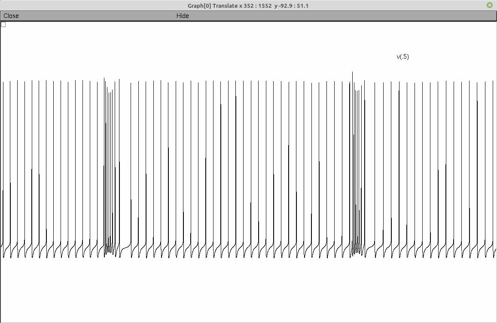

This is the README for Purkinje cell model code for the paper: Masoli, S., & D’Angelo, E. (2017). Synaptic Activation of a Detailed Purkinje Cell Model Predicts Voltage-Dependent Control of Burst-Pause Responses in Active Dendrites Neuroscience, 13(September), 11:278. http://doi.org/10.3389/fncel.2017.00278 Implementation done by Stefano Masoli in Python/Neuron. The dendritic processing in cerebellar Purkinje cells (PCs), which integrate synaptic inputs coming from hundreds of thousands granule cells and molecular layer interneurons, is still unclear. Here we have tested a leading hypothesis maintaining that the significant PC output code is represented by burst-pause responses (BPRs), by simulating PC responses in a biophysically detailed model that allowed to systematically explore a broad range of input patterns. BPRs were generated by input bursts and were more prominent in Zebrin positive than Zebrin negative (Z+ and Z−) PCs. Different combinations of parallel fiber and molecular layer interneuron synapses explained type I, II and III responses observed in vivo. BPRs were generated intrinsically by Ca-dependent K channel activation in the somato-dendritic compartment and the pause was reinforced by molecular layer interneuron inhibition. BPRs faithfully reported the duration and intensity of synaptic inputs, such that synaptic conductance tuned the number of spikes and release probability tuned their regularity in the millisecond range. Interestingly, the burst and pause of BPRs depended on the stimulated dendritic zone reflecting the different input conductance and local engagement of voltage-dependent channels. Multiple local inputs combined their actions generating complex spatio- temporal patterns of dendritic activity and BPRs. Thus, local control of intrinsic dendritic mechanisms by synaptic inputs emerges as a fundamental PC property in activity regimens characterized by bursting inputs from granular and molecular layer neurons. Requirement: The models was implemented in Python2.7 and NEURON 7.5 -> Upgraded to run with Python3.6 and NEURON 7.8 -> It works with Python2.7 and NEURON 7.7 too It requires a powerfull CPU with as many cores as possibile. The model uses NEURON multisplit to distribute automatically the calculation on all the available cores. A typical 5s simulation takes about 5m on an AMD 1800x 8cores/16thread CPU and half the time on a AMD threadripper 1950x 16cores/32thread CPU Usage instructions: Download and extract the archive. Under Linux/Unix: Change directory to "purkinjecell" folder. Run nrnivmodl ./mod_files to compile the mod files. To switch between Zebrin positive and Zebrin negative, there is a variable at the start of the main template. The model is provided with one protocols able to reproduce parallel fibers, asceding axon and stellate cell bursts: Run nrngui -python ./protocols/01_PFAA.py. The number of synapses, types, bursts frequency can be set in the dictionary at the start of the protocol. Here is a screenshot from running the command:  Attention: The model does not work with the variable time step! If you would like more help please refer to: https://senselab.med.yale.edu/ModelDB/NEURON_DwnldGuide.cshtml NOTES: Not tested under NEURON for windows or MAC OS.